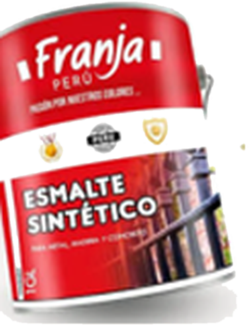

Prototipo demostrativo: reproduce las reglas de la tesis con datos de ejemplo. No está conectado a la empresa.
Así se usaría el DSS
Vista de referencia del tablero en AppSheet: stock de productos y envases, y lo que hacen las automatizaciones.
Stock frente al punto de reorden

Automatizaciones del día (ejemplo)
- Conteo cíclico de ítems clase A registrado en el celular.
- Bot de AppSheet detecta que el envase de 1 galón está bajo el punto de reorden.
- Apps Script elige al proveedor de menor costo total y arma una orden sugerida de 4 700 und.
- Alerta al supervisor con la orden pendiente.
- El supervisor aprueba. El DSS sugiere; la persona decide.
Del dato a la decisión
En la empresa, solo 3 de cada 4 pedidos llegaban a tiempo. El 78,6 % del impacto venía de roturas de stock. El DSS ordena los datos para decidir a tiempo qué comprar, si hay capacidad y qué revisar.
Qué está implementado y qué no
¿Cuándo comprar envases?
Ítem validado en la tesis: envase de 1 galón para esmalte sintético Franja. Mueve el stock y mira la decisión.
Parámetros calculados en la tesis
ROP = d̄ × L + SS
EOQ = √(2·D·S / H) = 4 710
Q ajustado = 4 700 und
La regla compara stock disponible más órdenes en camino con el ROP. La orden queda como propuesta: una persona la aprueba antes de emitirla.
¿Llego a la fecha comprometida?
El DSS usa el tiempo estándar por lote del Standard Work para comparar la carga pendiente con el tiempo disponible hasta la fecha del pedido. Prueba cambiar entre «Actual» y «Standard Work».
H = TD − CL · CL = Σ TL
Tiempos por lote: ciclo neto medio por OT simulado en Simio (As-Is 7,52 h; To-Be base 6,70 h). Horas por día, lotes y umbral de «riesgo» (holgura menor a un lote) son valores de ejemplo.
¿Qué revisar hoy?
El control cierra el ciclo: verifica que el stock del sistema sea el real antes de decidir.
Exactitud del registro de inventario (ERI)
ERI = (1 − |físico − registrado| / registrado) × 100
Alertas que contempla el diseño
Conteo cíclico: los ítems A se cuentan con más frecuencia que los B, y estos más que los C. Toda alerta queda registrada para seguimiento.
Un solo flujo de datos
El Standard Work estabiliza el proceso y entrega tiempos confiables; el DSS los usa junto con el inventario para decidir.
SOP, tiempo estándar Westinghouse, control visual
Capacidad, carga y holgura por línea
Pedidos, inventario, OT y proveedores
Comprar, producir, controlar
OTD estimado 88,9 % (rango 83,7–92,3 %)
Resultados de la validación en Simio
| Indicador | As-Is | To-Be |
|---|---|---|
| Ruptura de stock | 9,14 % | 2,82 % |
| Nivel de servicio | 91,80 % | 97,66 % |
| Ciclo neto por OT | 7,52 h | 6,70 h |
| OTD (estimado) | 75,1 % | 88,9 % |
IC 95 %: 540 réplicas (inventario) y 30 réplicas de 365 días (proceso).
Ampuero Ramirez, X. M. y Bernaola Rivadeneyra, M. A. · Ingeniería Industrial, UPC, 2026. Referencias · Recorre la planta · Inicio